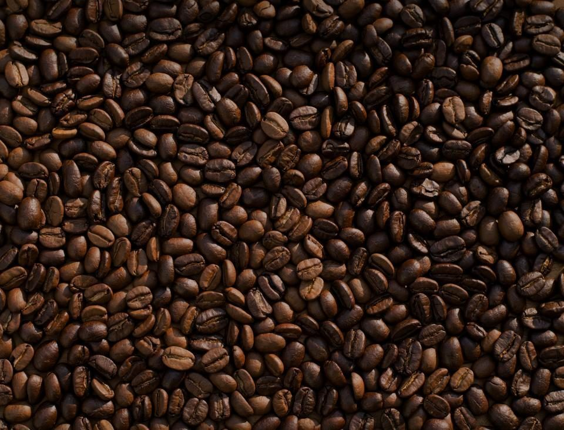

店のこと
ボディブラシの部位の配置図
お店の詳しい情報は準備中です。ここでは、制作側が考えたデザインの考え方を紹介します。


制作側の連想
番号は、部位の番号
ホームの図にある1〜6の番号は、それぞれボディブラシの部位の名前に対応します。ボディブラシの部位を図にしたもので、制作側の連想です。お店の理念・由来とは無関係で、実際の製品の仕様を示すものでもありません。
1ブラシ毛
体にあてて洗う、細い毛の束の部分。毛の長さや硬さは製品によってさまざまで、先をそろえた形もある。
2ヘッド(植毛板)
ブラシ毛を植え込んでいる土台の板の部分で、少しカーブした形もある。
3首(ネック)
ヘッドと柄をつなぐ部分で、ここで角度がついている形もある。
4柄
手の届きにくいところへブラシを運ぶための、細長い棒の部分。
5グリップ
手で握る部分で、すべりにくいように凹凸をつけた形もある。
6ループ
柄の端についた輪の部分で、ひもを通して吊るすときに使う。
写真(イメージ)
写真(イメージ)


写真はイメージです。お店のものではありません。
確認できていること
お店の情報
| 屋号 | くちどけこっぺが自慢のパン屋さん ぱん工房むぎ麦 |
|---|---|
| 所在地 | 〒059-1271 北海道苫小牧市澄川町４丁目６−２０ |
| SNS | Instagram @mugimugitentyou |
| そのほか | 準備中 |